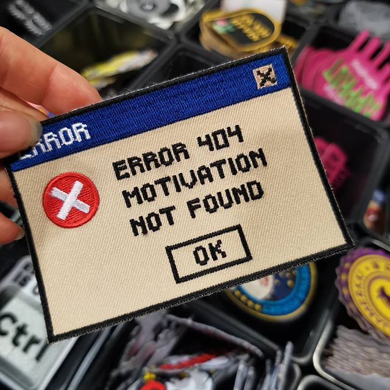

Haalarimerkkikauppa Oy
Tältä sivulta löydät laadukkaat haalarimerkit opiskelijalle sopivaan hintaan.
Voit myös lähettää meille merkki-ideasi ja me teemme ne sinulle valmiiksi. Ideat voi lähettää osoitteeseen haalarimerkkikauppaoy.yritys@yhteydenotto.fi
Toimitus
Luotettavana yrityksenä toimitamme tilaamasi haalarimerkit varmasti ja ajoissa.
Toimitamme merkkisi haluamallasi tavalla lähimpään postin pakettiautomaattiin tai matkahuollon pisteeseen.
Valikoimastamme löydät seuraavanlaisia merkkejä
- Pyöreitä merkkejä
- Neliön muotoisia merkkejä
- Suorakulman muotoisia merkkejä
Pääset kauppaan klikkaamalla tästä.

Kuvasta kilkkaamlla pääset katsomaan Lappeenrannan 10 vuorokauden sään.
Jos sinulla on kysymyksiä, voit lähettää ne sähköpostitse henkilölle Jonne Kiukas